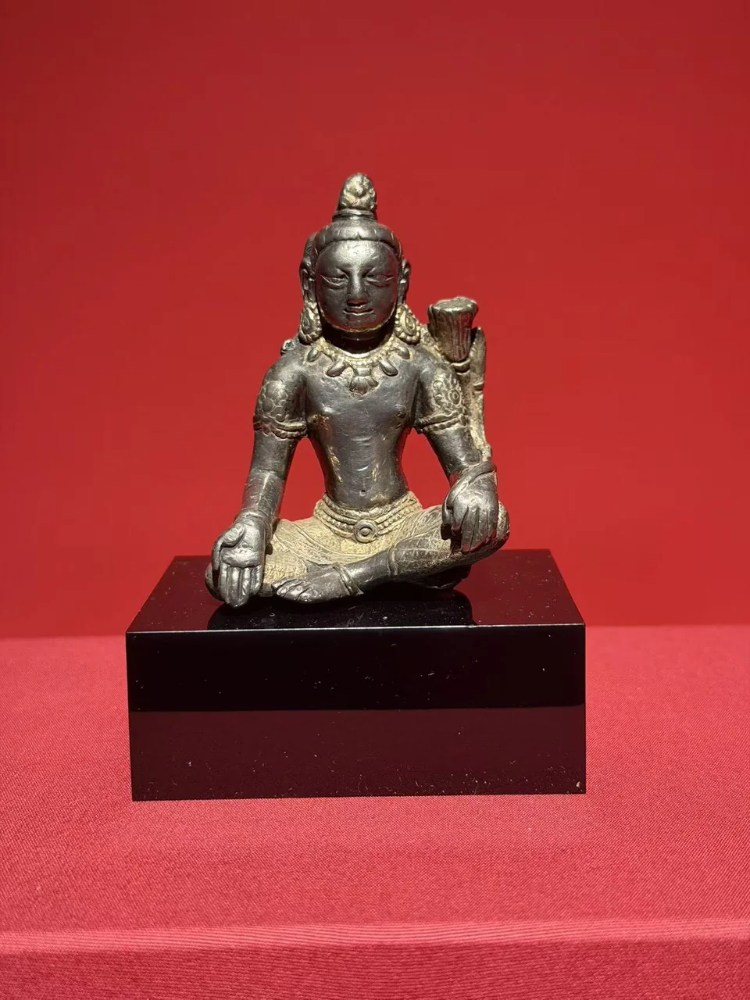
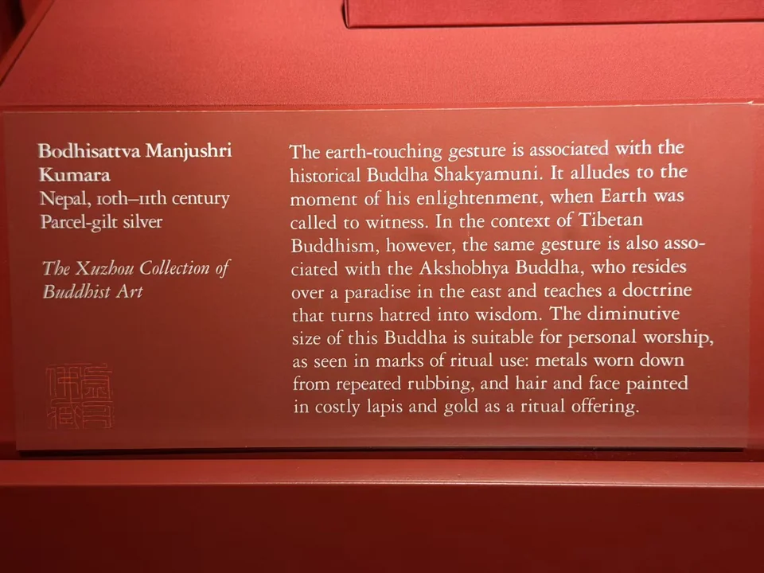

THE XUZHOU COLLECTION
童子相文殊菩萨
Bodhisattva Manjushri Kumara
银色的身体，与衣饰上局部的金色。

- 地区
- 尼泊尔
- 年代
- 10—11世纪
- 材料
- 局部鎏金银
- 收藏
- 虚舟收藏（私人收藏）
- 观看地点
- 休斯顿美术馆（MFAH）
作品札记
这尊像小，身体的转折却做得很完整：收腰、胸腹的起伏、盘起的腿，以及向外展开的手掌。银色表面并未全部覆金；项饰、臂钏和下身衣物上的金色，把装饰与肌肤区分开。肩侧竖着花茎与花头，发束则集中到头顶。
展签题名Manjushri Kumara，即童子相文殊菩萨，定为尼泊尔10—11世纪，材质为局部鎏金银。与旁边爪哇的金刚手比较，两件都以银为重要材料，但一件是局部鎏金，一件是嵌金；表面的明暗不能代替工艺记录。
资料注
1031号展签的右侧正文，与1026号降魔佛展签重复，谈到触地印与阿閦佛，和本件题名、姿态不符。本页依据独立的题名、年代和材料栏，不采用这段错配说明。
现场展签与原始记录

- 题名
- Bodhisattva Manjushri Kumara
- 地区
- Nepal
- 年代
- 10th–11th century
- 材料
- Parcel-gilt silver